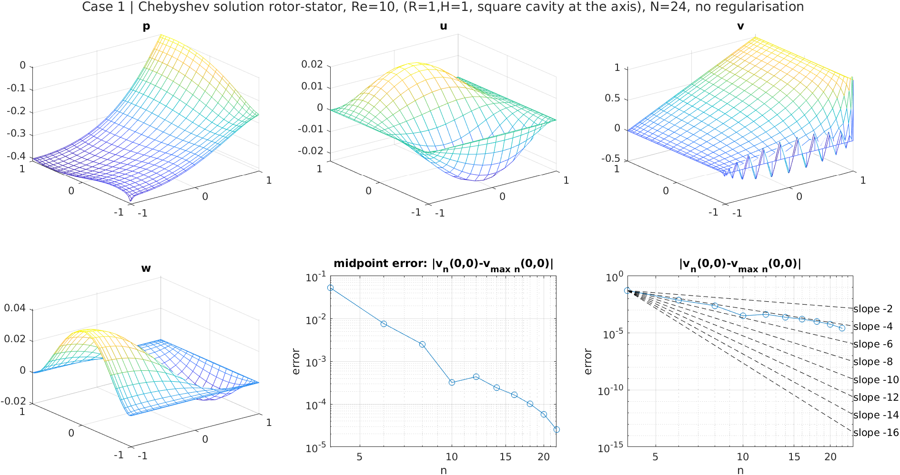
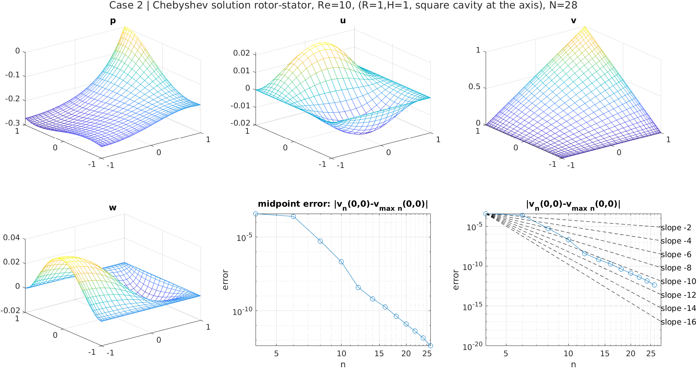
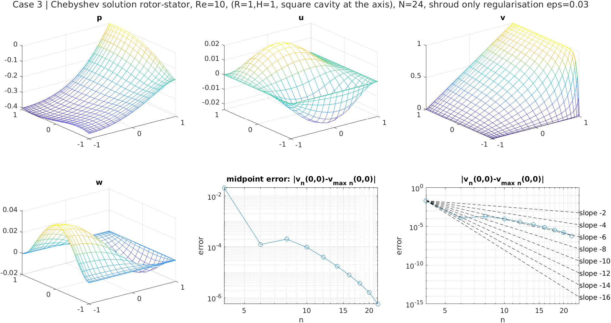
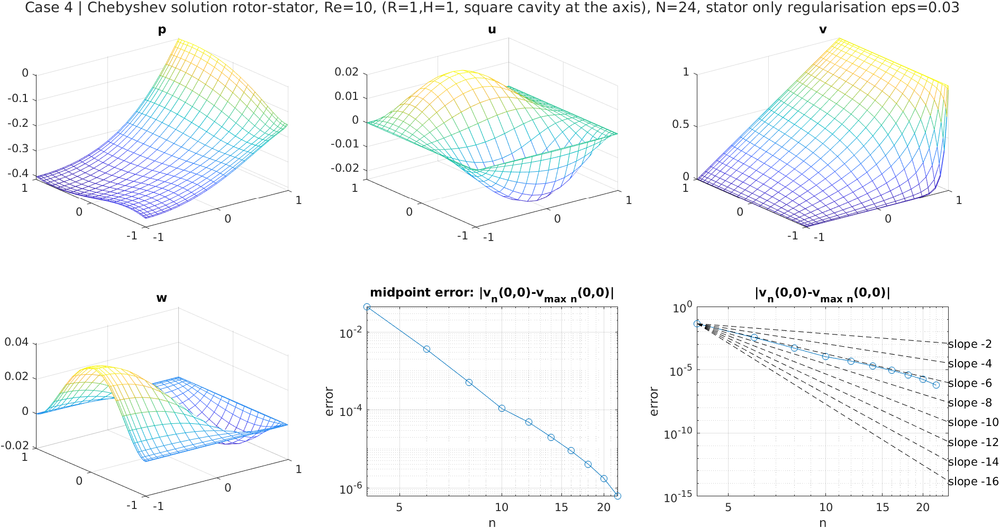
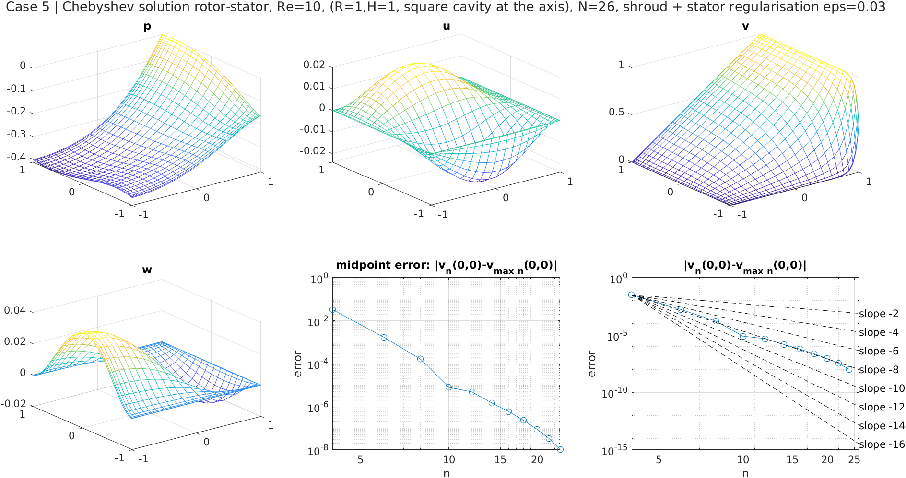

I was interested in how much the solution in the rotor-stator flow is degraded by the singularity of the boundary conditions in the corner. To investigate this I wrote a code that finds the base flow in rotor-stator flow and the space is discretised with Chebyshev polynomials following Spectral Methods in Fluid Dynamics (C. Canuto, M. Y. Hussaini, A. Quarteroni, and T. A. Zang) section 3.5.1. I use fully staggered grid, so citing Canuto: "The fully staggered grid uses different nodes for each primitive variable. The u component of velocity is defined at the Gauss–Lobatto points in x and the Gauss points (plus the boundary points) in y; hence, it is a polynomial of degree N in the x variable and degree N + 1 in the y variable. The v component is handled in reverse fashion. Finally, the pressure is defined at the Gauss points in both directions; hence, it is a polynomial of degree N − 1 in each variable." The flow case is the square cavity at the axis at Re=10 for simplicity. The base flow is found by the usual Newton method. Due to convolution of the 2D fields the algorithm is quite slow (O(n^6)) so around 30 modes is the max what I can do in a reasonable time. The computations with n=24 with 3 Newton iterations and the solving of full system takes in total 10 minutes. I considered 6 cases of boundary conditions: 1) no regularisation, 2) linear shroud, 3) shroud regularisation with an exponential profile in the spirit of Lopez and Serre with eps=0.03, 4) the same as 3) but on the stator, 5) shroud and stator regularisation with exponential profiles with eps=0.03, 6) same as 5) but eps=0.006. I attach six plots summarising the computations. I monitored the value of the v velocity (utheta) in the central point of the cavity. I didn't bother transform the usual [-1,1] interval to the real one for plotting but the axis has to be imagined in the left of the plot and the stator in the right. Concerning observations I see that (at least concerning the pointwise utheta value at the midpoint) the nonregularised case (1) converges with O(1/n^4). This is improved by imposing exponential profiles and in particular regularising the shroud and the stator at the same time (cases 5 and 6) allows to get the similar accuracy with thinner regularisation than regularising the shroud or stator alone (convergence is O(1/n^6) for cases 3,4 and 6). Also the linear shroud profile is converging quite fast with O(1/n^10).




